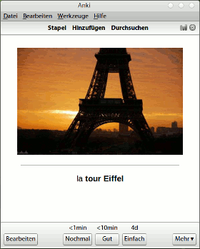
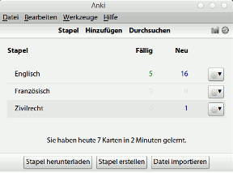
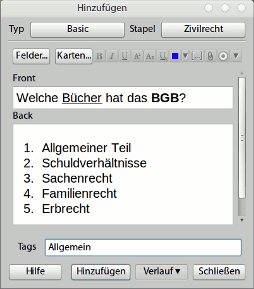
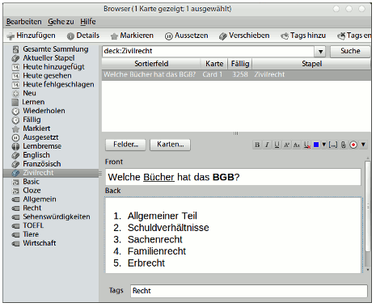
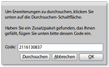

Anki
Dieser Artikel wurde für die folgenden Ubuntu-Versionen getestet:
Ubuntu 14.04 Trusty Tahr
Zum Verständnis dieses Artikels sind folgende Seiten hilfreich:
Anki  ist ein freies Lernkartei-Programm unter der AGPLv3-Lizenz. Der dabei verwendete Lernalgorithmus ist besonders gut geeignet, Wissen in das Langzeitgedächtnis zu übertragen, da die Wiederholungsintervalle der einzelnen Karteikarten umso länger werden, desto besser man die Inhalte einer Karte beherrscht.
ist ein freies Lernkartei-Programm unter der AGPLv3-Lizenz. Der dabei verwendete Lernalgorithmus ist besonders gut geeignet, Wissen in das Langzeitgedächtnis zu übertragen, da die Wiederholungsintervalle der einzelnen Karteikarten umso länger werden, desto besser man die Inhalte einer Karte beherrscht.
Hinsichtlich der verwendbaren Medien ist Anki flexibel und unterstützt Bilder, Audios, Videos und die Eingabe von naturwissenschaftlichen Formeln über LaTeX. Zudem sind die Verwendung mehrerer Felder möglich (z.B. neben Frage-Antwort auch Lautschrift, Bild, etc.) sowie verschiedene Sprachen (z.B. Englisch-Deutsch, Deutsch-Englisch). Entsprechend umfangreich sind die möglichen Anwendungsbeispiele:
Fremdsprachen lernen
Staatsexamen in Medizin oder Jura vorbereiten
Namen und Gesichter von Leuten auswendig lernen
auf der Weltkarte fitter werden
lange Gedichte auswendig lernen, usw.
|  |
| Anki in der Version 2 |
Dabei kann man auf etliche von anderen Nutzern freigegebene Kartenstapel ("shared decks") zurückgreifen.
Das Programm ist für verschiedenste PC-Plattformen verfügbar (Linux, Windows, Mac OS X) sowie für Geräte mit Android ("AnkiDroid") und (allerdings kostenpflichtig) für iPhones/iPods/iPads ("AnkiMobile"). Darüber hinaus gibt es die Online-Plattform AnkiWeb , mit der man auf seine Karteikarten über den Browser zugreifen kann. Dazu kann man Anki mit dem dahinter stehenden Server synchronisieren.
Mit Erweiterungen ("Add-Ons") lässt sich Anki um verschiedene Funktionen erweitern und individualisieren. Zum Beispiel lassen sich dadurch japanische und chinesische Schriftzeichen (Kanji) oder Musiknoten besser integrieren oder man kann sich den Text auf Karteikarten mittels Text-to-Speech-Systemen (TTS) vorlesen lassen.
Der Name Anki leitet sich vom japanischen Wort für auswendig Lernen, "暗記", ab. Der Lernalgorithmus ist eine Weiterentwicklung des SM2-Algorithmus, der ursprünglich für die proprietäre Lernsoftware SuperMemo entwickelt wurde und dann von dessen Entwickler Piotr Wozniak unter die LGPL-Lizenz gestellt worden ist. Hauptentwickler von Anki ist Damien Elmes, der das Programm inzwischen hauptberuflich entwickelt.
Installation¶
Hinweis:
In den Paketquellen ist bis Ubuntu 12.10 nur die veraltete Version 1.x zu finden, erst ab Ubuntu 13.10 ist Version 2.x verfügbar. Empfehlenswert ist jedoch, Anki ausschließlich in einer Version ab 2.0 oder neuer zu verwenden, da es mit dem Versionssprung grundlegende Änderungen (Dateiformat) gab.
Aus den Paketquellen¶
Anki ist Bestandteil von Ubuntu. Installation der (möglicherweise veralteten) Version:
anki, universe
Manuell¶
Die aktuelle Version kann von der Webseite als DEB-Paket  heruntergeladen und manuell installiert[2] werden.
heruntergeladen und manuell installiert[2] werden.
Hinweis!
Fremdpakete können das System gefährden.
Bedienung¶
Beim Starten erscheint die Stapelübersicht, in der die existierenden Stapel angezeigt werden. 
Hinzufügen von Karten¶
Über die Schaltfläche "Hinzufügen" öffnet sich eine neue leere Karte. Über die oben stehenden Schaltflächen sind Standard-Formatierungen wie Fettdruck, Unterstreichung und kursiver Text möglich. Für komplizierte Formatierungen kann man über das Erweiterungs-Symbol auf der rechten Seite auch HTML-Code eingeben oder LaTeX verwenden. Über die Schaltfläche mit der Heftklammer können Multimedia-Anhänge wie Bilder, Töne und Videos eingefügt werden. Über "Hinzufügen" landet die neue Karte zuletzt im Stapel. 
Karten lernen¶
Über die Stapelübersicht kann man einen Stapel öffnen und dort auf "Jetzt lernen" drücken. Anki zeigt dann alle neuen und fälligen (d.h. zu wiederholenden) Karteikarten nach und nach an. Dabei muss der Nutzer nach dem Aufdecken der Karte in einer Skala von 1-4 bewerten, wie gut er die Karte konnte. Entsprechend wird die Karte dann sehr bald oder erst später wieder fällig.
Es lässt sich ein Tageslimit für Anki einstellen, d.h. wie viele Karten am Tag gelernt werden sollen (Voreinstellung: 100 Karten). Dazu muss man in der Stapelübersicht auf das Zahnrad-Symbol neben dem Stapel klicken und "Optionen" wählen. Im Reiter "Wiederholungen" kann man die "Max. Wiederholungen/Tag" einstellen.
Editieren von Karten¶
Einzelne Karteikarten lassen sich im Lernmodus über den Knopf "Bearbeiten" editieren. Das ist aber auch im Anki-Browser möglich.
Anki Browser¶
Über die Schaltfläche "Durchsuchen" in der Stapelübersicht gelangt man in den Anki Browser. Der Browser ist das zentrale Werkzeug, um etwas an den bestehenden Karten zu ändern. So kann man dort einzelne Karten editieren, aber auch Karten nach bestimmten Kriterien anzeigen lassen, z.B. alle Karten aus einem bestimmten Stapel oder mit einem bestimmten Tag. 
Freigegebene Stapel verwenden¶
Nutzer haben die Möglichkeit, ihre Stapel mit einzelnen oder allen Nutzer zu teilen. Über die Schaltfläche "Stapel herunterladen" in der Stapelübersicht oder über den direkten Link zur Projektseite kann man auf hunderte von freigegebenen Stapeln ("shared decks") zugreifen, die dort veröffentlicht wurden. Dort gibt es vordefinierte Stapel zu diversen Themen. Beispiele:
Vorbereitung auf Englisch-Tests (TOEFL, Business English, Cambridge etc.)
Arabisch-Kurse
das Periodensystem der Elemente
Vogelarten (mit Lernrichtungen Ton oder Bild)
Komponisten und ihre Werke
Nachdem man einen Stapel als Datei (Erweiterung .apkg) auf den Rechner gespeichert hat, importiert man ihn aus der Stapelübersicht über den Menüpunkt "Datei -> Importieren". Er erscheint dann wie ein selbst ersteller Stapel in der Stapelübersicht und kann ebenso editiert werden.
Erweiterungen¶
Anki kann durch das Einbinden von Erweiterungen ("Add-Ons") nachträglich um verschiedene Funktionen erweitert und individualisiert werden. Neben Erweiterungen, die das Erlernen spezieller Themen erleichtern (japanische/chinesische Schriftzeichen, Musiknoten, etc.), gibt es auch viele Erweiterungen, die praktische Funktionen zur Bedienung von Anki hinzufügen, zum Beispiel:
Vollbild-Modus über Taste F11
Sprachausgabe, um sich Karteikarten vorlesen zu lassen (Text-to-Speech-Systeme)
Summe der zu wiederholenden/neuen Karten in der Stapelübersicht anzeigen ("Decks Total")
Aufdeckbilder erstellen, um sich z.B. Bildbeschriftungen eines anatomischen Modells abzufragen ("Image Occlusion")
 Eine Übersicht über die frei verfügbaren Erweiterungen erhält man über den Menüpunkt "Werkzeuge -> Erweiterungen -> Suchen & Installieren". Mit einem Klick auf die Schaltfläche "Durchsuchen" öffnet sich eine Webseite mit den Erweiterungen. Über die Schaltfläche "Info" gelangt man in die Detailansicht der Erweiterung.
Um eine Erweiterung zu installieren, muss man im Dialogfenster "Werkzeuge -> Erweiterungen -> Suchen & Installieren" den jeweiligen "Code" der Erweiterung einfügen. Diesen kann man aus der Detailansicht der jeweiligen Erweiterung kopieren. Ein Klick auf "OK" installiert die Erweiterung. Nach einem Neustart von Anki ist die Erweiterung aktiv.
 Übersichtsseite zu alternativen Programmen
Übersichtsseite zu alternativen Programmen- Erstellt mit Inyoka
-
 2004 – 2017 ubuntuusers.de • Einige Rechte vorbehalten
2004 – 2017 ubuntuusers.de • Einige Rechte vorbehalten
Lizenz • Kontakt • Datenschutz • Impressum • Serverstatus -
Serverhousing gespendet von